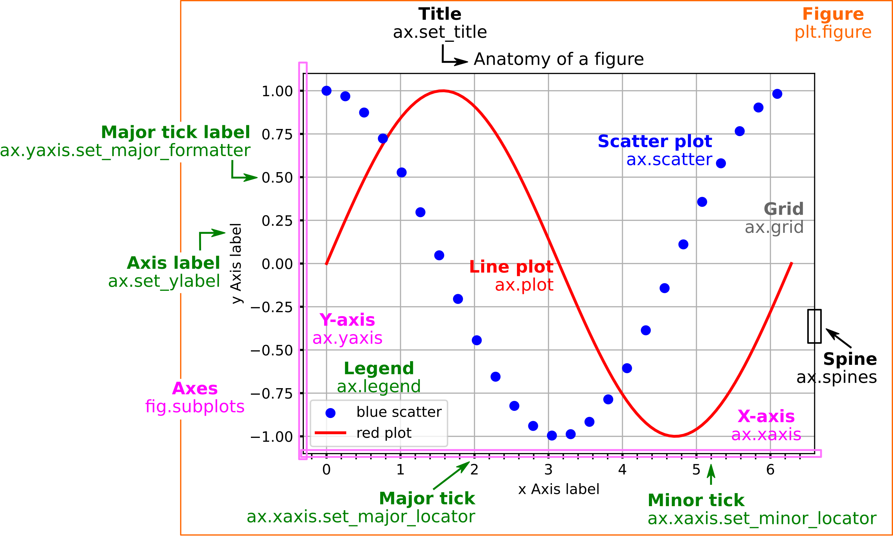
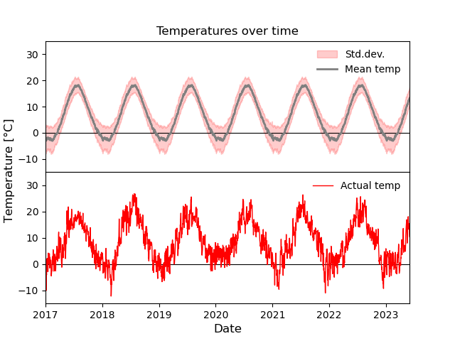

# Import modules
import matplotlib.pyplot as plt # <- Matplotlib
from datetime import datetime # <- Additional package we are going to use for the challenge in the end
import numpy as np # <- Numpy
Introduction to Matplotlib - Visualization with Python#
Matplotlib is a Python package for data visualization (static, animated and interactive), typically in the form of plots, graphs, charts and animations. In fact, it allows you to target just about any plot output you would like.
In this notebook, we will go through some of the basics to get you started – BUT – there are many, many more opportunities.
You will need to explore those on your own and as relevant to the particular needs of your work.
A quick overview of Matplotlib#
Pyplot matplotlib.pyplot is a so-called API (Application Programming Interface) for the matplotlib that makes it possible to use Python as an open-source alternative to MATLAB when it comes to plot functionality.
The two faces of Matplotlib#
Matplotlib comes with two interfaces:
A MATLAB-style state-based interface (simple plotting ala MATLAB-style).
This interface is stateful, meaning that it keeps track of state (i.e., the current figure and axes), which is where all
pltcommands apply.An object-oriented interface (more advanced and customizable)
Here the plotting functions are methods working directly on the object instances (
FigureandAxes)
NOTE While most of the methods applicable to plt also works on Axis objects, there are some (slightly annoying) differences, e.g.,
plt.xlim()->axis.set_xlim()(likewise for ylim)plt.xlabel()->axis.set_xlabel()(likewise for ylabel)plt.title()->axis.set_title()
Anatomy of a Figure object#
Figure inspired by: Geeksforgeeks

IMPORTANT
Go through the code step-by-step to understand what is going on
Every time you see a new Python/Matplotlib function/keyword - look up the documentation online and try out how it works
Much more information and many more examples can be found here
Let’s start by plotting a sine function using the MATLAB-style interface#
The function:
\(f(x) = y = \sin(x)\)
So, what do we need?#
A set of x-values covering the range of interest
Evaluate the function at these x-values
Plot the function values against the x-values
Save the plot as a figure
# Step 1 - Usese numpy linspace to create an array of 100 evenly spaced x-values from 0 to 2*pi.
xvalues = np.linspace(0, 2 * np.pi, 100)
# Step 2 - Use this array, we evaluate the function values
yvalues = np.sin(xvalues)
# Step 3 - Use the matplotlib.pyplot plot function to plot the x-values and associated y-values as a line
plt.plot(xvalues, yvalues)
# Step 4 - Save the plot as a png figure with name sine_plot
plt.savefig("sine_plot.png", dpi=300)
Now this is not very pretty.#
Beautification
We forgot axis labels
We only want to show the plot for the range of x-values used
We want the plotted line to be red instead of blue, and it also needs to be a big thicker
We want the fonts to be bigger - both axis and tick labels
# Change line width and color
plt.plot(xvalues, yvalues, linewidth=2, color="red")
# Add axis labels and adjust their fontsize
plt.xlabel(r"$x$", fontsize=14)
plt.ylabel(r"$f(x)$", fontsize=14)
# Change size of the tick labels
plt.tick_params(axis="both", labelsize=14)
# Adjust plot range
plt.xlim([0, 2 * np.pi])
# Save the plot as a png figure with name sine_plot_beautified
# The file extention (.png, -jpb, .pdf) give the respective format of the figure. The resolution can be indicated using dpi.
plt.savefig("sine_plot_beautified.png", dpi=300)
If you have a series of (x, y) values, you can also plot them as separate points using matplotlib.pyplot scatter#
# This time I use a list just to show you that the inputs can be any float or array-like object
xvalues = [2, 4, 7]
yvalues = [1, 5, 8]
colors = ["red", "blue", "black"]
sizes = [20, 40, 80]
plt.scatter(xvalues, yvalues, c=colors, marker="*", s=sizes)
<matplotlib.collections.PathCollection at 0x7f5706fcdf40>
Several subplots using the MATLAB-style interface#
We can make several plots in a figure by using the matplotlib.pyplot subplot function.
Using this function, you can create a subplot and set the current axis of plt. Please note that you have no “handle” of each subplot - you have to change the state of plt to the relevant subplot whenever you want to work on it.
Syntax: axis = plt.subplot(<number of rows>, <number of cols>, <panel index>)
where axis is the Axes of the subplot.
Please see this link for more options.
Let’s see an example below where we plot cosine in a plot to the left and sine in a plot to the right.
# Defining the x-values
xvalues = np.linspace(0, 2 * np.pi)
# Evaluating y-values
cosine_values = np.cos(xvalues)
sine_values = np.sin(xvalues)
# Create a plot figure of desired dimensions
plt.figure(figsize=(7,3))
# Create a subplot (rows, colums, panel number) and set the current axis (via panel number)
plt.subplot(1, 2, 1)
# Plot cosine values in the first subplot
plt.plot(xvalues, cosine_values, label="Cosine")
# Add axis labels and legend to current axis
plt.xlabel(r"$x$")
plt.ylabel(r"$\cos(x)$")
plt.legend()
# Adjust plot range
plt.xlim([0, 2 * np.pi])
# Add subfigure label
plt.text(-2, 0.9, "a)", fontsize=14, fontweight="bold", color="blue")
# Create second subplot and set the current axis
# so all plt commands will now be associated with the second subplots
plt.subplot(1, 2, 2)
# Plot sine values in the second subplot
plt.plot(xvalues, sine_values, label="Sine")
# Add axis labels and legend to current axis
plt.xlabel(r"$x$")
plt.ylabel(r"$\sin(x)$")
plt.legend()
# Adjust plot range
plt.xlim([0, 2 * np.pi])
# To remove overlap between plots and labels
plt.subplots_adjust(wspace=0.4)
# Add subfigure label
plt.text(-2, 0.9, "b)", fontsize=14, fontweight="bold", color="green")
Text(-2, 0.9, 'b)')
Several subplots using the object-oriented interface#
We can also make several plots in a figure by using the matplotlib.pyplot subplots function.
As opposed to subplot, the subplots function gives you a handle to the figure and axes objects.
Syntax: fig, axes = plt.subplots(<number of rows>, <number of cols>)
where fig is an instance of the Figure object and axes is a tuple of instances of the Axis object.
Please see this link for more options.
Let’s repeat the example from above where we plot cosine in a plot to the left and sine in a plot to the right.
# Defining the x-values
xvalues = np.linspace(0, 2 * np.pi)
# Evaluating y-values
cosine_values = np.cos(xvalues)
sine_values = np.sin(xvalues)
# Create a figure and two subplots (one row, two columns) and unpack the output Axes tuple immediately (in ax1 and ax2)
# Also set the figure size to our liking
fig, (ax1, ax2) = plt.subplots(nrows=1, ncols=2, figsize=(7, 3))
# Plot cosine values in the first subplot
ax1.plot(xvalues, cosine_values, label="Cosine")
# Plot sine values in the second subplot
ax2.plot(xvalues, sine_values, label="Sine")
# Add axis labels (note the additional set_ in set_xlabel when you are working on axis objects instead of plt)
ax1.set_xlabel(r"$x$")
ax1.set_ylabel(r"$\cos(x)$")
ax2.set_xlabel(r"$x$")
ax2.set_ylabel(r"$\sin(x)$")
# Add plot legends
ax1.legend()
ax2.legend()
# Adjust plot range
ax1.set_xlim([0, 2 * np.pi])
ax2.set_xlim([0, 2 * np.pi])
# To remove overlap between plots and labels
plt.subplots_adjust(wspace=0.4)
# Label the subplots with a) and b) for easier referencing when used as a figure in a publication
# The transform = ax.transAxes allows you to position the text by coordinates relative to the exes on a scale from 0 to 1.
# If you do not provide this argument, the text function will assume the actual coordinates
ax1.text(
-0.3, 1, "a)", fontsize=14, fontweight="bold", color="blue", transform=ax1.transAxes
)
ax2.text(
-0.3,
1,
"b)",
fontsize=14,
fontweight="bold",
color="green",
transform=ax2.transAxes,
)
Text(-0.3, 1, 'b)')
Matplotlib Challenge#
Now it is your turn.
Below is a figure based on some data. Provided this data, your task is to reproduce the figure as closely as possible.
The example data is a truncated set of historical weather data from Stockholm, retrieved from the Bolin Centre for Climate Research, Stockholm University.
Take notice of the following features
2 subplots with shared x-axis
y=0 degrees line in both plots
legend in top right corner showing the plotted labels without a frame
Title in plot
Centered y-axis label
No distance between plots
Top plot:
fill between the average time of year (toy) +/- the std.dev. temperature
Plot of the average time of year (toy) temperature
No x-tick labels
Bottom plot:
Plot the daily mean temperature
There is some starter code that loads the data in the cell below the plot.

# --------------------------------------------
# Plotting task starting code
# Loading the data and fixing the data types
# --------------------------------------------
data = np.loadtxt(
"stockholm_daily_mean_avg_std_temperature.csv",
delimiter=",",
usecols=(0, 1, 2, 3),
skiprows=1,
dtype=object,
converters={
0: lambda x: datetime.strptime(x.decode(), "%Y-%m-%d"),
1: float,
2: float,
3: float,
},
)
dates = data[:, 0]
daily_mean = data[:, 1].astype(float)
avg_toy = data[:, 2].astype(float)
stddev_toy = data[:, 3].astype(float)
# --------------------------------------------
fig, (ax1, ax2) = plt.subplots(2, 1)
fig.text(
0.02,
0.5,
r"Temperature [$\degree$C]",
ha="center",
va="center",
rotation=90,
fontsize=12,
)
x_values = np.arange(len(data[:, 0]))
ax1.set_title("Temperatures over time")
ax1.axhline(y=0, color="k", linewidth=0.8)
ax1.fill_between(
dates,
avg_toy - stddev_toy,
avg_toy + stddev_toy,
color="r",
alpha=0.2,
label="Std.dev.",
)
ax1.plot(dates, avg_toy, "grey", linewidth=2, label="Mean temp")
ax1.legend(frameon=False, loc="upper right")
ax1.set_ylim([-15, 35])
ax1.set_xlim([datetime(2017, 1, 1), datetime(2023, 6, 1)])
ax1.xaxis.set_ticklabels([])
# # Plot the actual data
ax2.axhline(y=0, color="k", linewidth=0.8)
ax2.plot(dates, daily_mean, "r", linewidth=1.0, label="Actual temp")
ax2.legend(frameon=False, loc="upper right")
ax2.set_ylim([-15, 35])
ax2.set_xlim([datetime(2017, 1, 1), datetime(2023, 6, 1)])
ax2.set_xlabel("Date", fontsize=12)
plt.subplots_adjust(left=0.1, hspace=0)
plt.savefig("daily_avg_temperature.png")
# Hint for xlims
# plt.xlim([datetime(2017, 1, 1), datetime(2023, 6, 1)])